Conversation
You get in touch. You speak to a real person. After 20 minutes, you decide if you want to go further.

Coaching for people who don’t want coaching.
A new start. A different life.
A change you have wanted for a while that has not happened yet.
We help make it happen.
The path
We will find you where you are and walk with you where you’re going.
You get in touch. You speak to a real person. After 20 minutes, you decide if you want to go further.
Online or in person. North Devon, beach, Exmoor, woods, fires, water, wilderness.
Bring yourself or your team. A day, a few nights, or go to Ghana.
What this is
You are already brilliant.
You just need to stop doing the crappy things.
Simple psychology. Tools you can use today.
Person-centred, solution-focused.
No endless process.
What people say
Joe is different. Good different. Very good different. I’ve worked with a variety of coaches over the years but can honestly say that I have developed the most - both personally and professionally - with Joe. His approach is unique. I am encouraged to think deeply and do better and be better.
Want a different type of coach? He gets to the core of the issue whilst getting you to reflect, question, laugh, cry (in a good way), and solve the problem. I leave feeling challenged, like I’ve had therapy, leadership development and great fun. Book it - it’s rare to find someone of this quality.
He has been instrumental in transforming the way I think, behave and manage my leadership role. He is so in tune with what you think and feel and can very quickly delve deeper into the why and what but ultimately the how to make things better.
Joe’s sessions feel more like soul-searching, which feeds into both the logical and emotional brain. Inherently helpful and I am already grateful for his sincere interest and commitment to helping me grow as a leader, and a person.
Upcoming talks
Open session. Spaces limited.
Workshop week. More detail when dates firm up.
Teaching, coaching, and leadership in country.
You speak to a real person. No data collected. No notes made. Just a conversation. Book a free 20-minute slot and go from there.